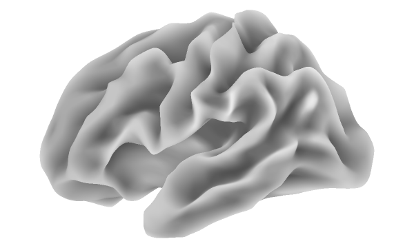
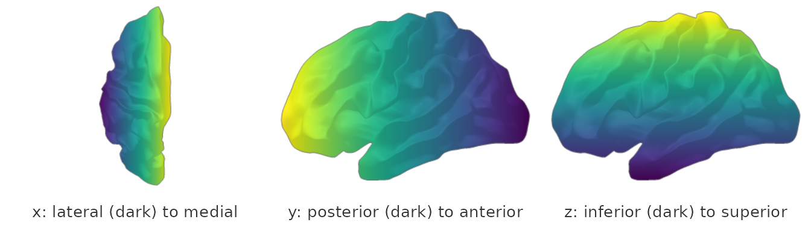

Introduction to NeuroSurf Data Structures
Bradley Buchsbaum
2026-11-12
Source:vignettes/introduction-to-neurosurf.Rmd
introduction-to-neurosurf.RmdThis vignette introduces the fundamental data structures used in the
neurosurf package for representing and working with brain
surface geometries and associated data.
For visualization, see the companion vignettes:
- the Displaying
surfaces with RGL article for interactive 3D plots based on
plot()andview_surface(). -
vignette("interactive-surfaces")for HTML-widget based exploration. -
vignette("surface-figures")for multi-view, publication-quality figures built withsurface_figure().
SurfaceGeometry: Representing the Mesh
The core building block for any surface analysis is the geometry
itself. In neurosurf, this is represented by the
SurfaceGeometry class.
An object of this class encapsulates:
-
mesh: Anrgl::mesh3dobject containing the raw vertex coordinates and the triangular faces that define the surface shape. -
graph: Anigraphobject representing the connectivity of the mesh vertices. Edges connect adjacent vertices along the surface. -
hemi: A character string indicating the hemisphere, typically “lh” (left) or “rh” (right).
Loading a SurfaceGeometry
You can load a surface geometry from various file formats (Freesurfer
binary, Freesurfer ASCII .asc, GIFTI .gii)
using the read_surf_geometry() function.
library(neurosurf)
# The example left smoothed white surface shipped with the package
white_lh_asc <- system.file("extdata", "std.8_lh.smoothwm.asc",
package = "neurosurf")
lh_geom <- read_surf_geometry(white_lh_asc)
# Display summary information about the loaded geometry
show(lh_geom)
#>
#> SurfaceGeometry
#>
#> Basic Information:
#> Hemisphere: left
#> Vertices: 642
#> Faces: 1,280
#> Edges: 1,920
#>
#> Geometry Metrics:
#> Euler Characteristic: 2
#> Genus: 0
#> Surface Area: 53,137 mm^2
#> Avg Edge Length: 10.3 mmAccessing Geometry Properties
Several methods allow you to access information within the
SurfaceGeometry object:
# Total number of vertices (nodes) in the geometry
length(nodes(lh_geom))
#> [1] 642
# Vertex coordinates as an N x 3 matrix; its dimensions and first 3 rows
vertex_coords <- coords(lh_geom)
dim(vertex_coords)
#> [1] 642 3
head(vertex_coords, 3)
#> [,1] [,2] [,3]
#> [1,] -32.43124 -5.756156 -26.85239
#> [2,] -38.78497 10.942583 52.54661
#> [3,] -26.23813 -35.324768 58.41325
# The underlying igraph connectivity object: one node per vertex,
# one edge per mesh edge
g <- neurosurf::graph(lh_geom)
c(nodes = igraph::vcount(g), edges = igraph::ecount(g))
#> nodes edges
#> 642 1920
# The underlying rgl mesh3d object, and the hemisphere label
class(lh_geom@mesh)
#> [1] "mesh3d" "shape3d"
lh_geom@hemi
#> [1] "lh"
NeuroSurface: Mapping Data to Geometry
Often, we want to associate data values (like cortical thickness,
fMRI activation, etc.) with each vertex on the surface. The
NeuroSurface class links a single vector of data
to a SurfaceGeometry.
It contains:
-
geometry: The associatedSurfaceGeometryobject. -
indices: An integer vector specifying which vertices in the geometry have corresponding data values. This allows for representing data defined only on a subset of the surface. -
data: A numeric vector containing the data values. Its length must match the length ofindices.
Creating a NeuroSurface
You typically create a NeuroSurface using its
constructor, providing the geometry, indices, and data.
# Example data: curvature at every vertex
vertex_indices <- nodes(lh_geom)
example_data <- curvature(lh_geom)
# Create the NeuroSurface object
lh_surf_data <- NeuroSurface(geometry = lh_geom,
indices = vertex_indices,
data = example_data)
# Display summary
show(lh_surf_data)
#>
#> NeuroSurface
#>
#> Geometry & Data Mapping:
#> Hemisphere: lh
#> Total Vertices: 642
#> Vertices w/ Data:642
#>
#> Data Summary:
#> Min: 0
#> Median:0.5069
#> Mean: 0.4956
#> Max: 1A NeuroSurface is easiest to understand as a picture:
its values painted on its geometry. render_surface_rgba()
draws one view without a graphics device. Curvature is anatomy, so it is
drawn the way FreeSurfer shows anatomy: as the grey underlay itself,
sulci dark and gyri light, with no colour overlay and no lighting, so
every grey level is a curvature value. (FreeSurfer’s own
?h.curv files are positive in sulci;
curvature() returns mean curvature min-max rescaled to [0,
1], higher on gyri.)
no_overlay <- rep(NA_real_, length(nodes(lh_geom)))
panel <- render_surface_rgba(
geometry(lh_surf_data), no_overlay,
anatomy_metric = lh_surf_data@data, anatomy_style = "continuous",
anatomy_range = c(0.3, 0.92), lighting = FALSE,
outer_contour = FALSE, camera = "lateral",
width = 600, height = 360, antialias = 2
)
Left hemisphere, lateral view, shaded by curvature: 0 (dark, sulcal fundi) to 1 (light, gyral crowns).
Loading Data with read_surf (Optional Data File)
If your data is stored in a separate file (e.g., AFNI
.1D.dset, NIML .niml.dset), you can load both
the geometry and the data using read_surf. Here we create a
temporary .1D.dset file for demonstration.
# 1. Prepare sample data for a subset of nodes
set.seed(1)
# R indices are 1-based; AFNI .1D files are 0-based
sample_nodes_indices_R <- sample(nodes(lh_geom), size = 500)
sample_nodes_indices_0based <- sample_nodes_indices_R - 1
sample_data <- rnorm(500)
# 2. Create a temporary file
temp_dset_file <- tempfile(fileext = ".1D.dset")
# 3. Write data in AFNI .1D format (node_index value)
write.table(cbind(sample_nodes_indices_0based, sample_data),
file = temp_dset_file,
row.names = FALSE,
col.names = FALSE,
sep = " ")
# 4. Load geometry and the data from the temporary file
# read_surf will match nodes in the file to the geometry
lh_surf_loaded <- read_surf(surface_name = white_lh_asc,
surface_data_name = temp_dset_file)
# Display summary of the loaded NeuroSurface
show(lh_surf_loaded)
#>
#> NeuroSurface
#>
#> Geometry & Data Mapping:
#> Hemisphere: lh
#> Total Vertices: 642
#> Vertices w/ Data:500
#>
#> Data Summary:
#> Min: -2.716
#> Median:-0.01771
#> Mean: 0.006245
#> Max: 3.266
# Values loaded, and how many are non-zero (500, the sample size)
length(lh_surf_loaded@data)
#> [1] 500
sum(lh_surf_loaded@data != 0)
#> [1] 500Accessing NeuroSurface Properties
# The geometry can be retrieved and matches the original
identical(geometry(lh_surf_data), lh_geom)
#> [1] TRUE
# The data vector, via the slot (lh_surf_data@data) or as.vector();
# its length and first few values
data_vec <- lh_surf_data@data
length(data_vec)
#> [1] 642
head(data_vec, 5)
#> [1] 0.1802186 0.8148318 0.1868353 0.5367108 0.3010823
# The associated vertex indices
index_vec <- indices(lh_surf_data)
length(index_vec)
#> [1] 642
head(index_vec, 5)
#> [1] 1 2 3 4 5
NeuroSurfaceVector: Mapping Multiple Data Vectors
When you have multiple measurements per vertex (e.g., time series
data, multiple features), the NeuroSurfaceVector class is
used. It links a matrix of data to a
SurfaceGeometry.
It contains:
-
geometry: The associatedSurfaceGeometryobject. -
indices: An integer vector specifying which vertices have data (same asNeuroSurface). -
data: AMatrix(from theMatrixpackage, often sparse) where rows correspond to vertices (matchingindices) and columns represent different measurements or time points.
Creating a NeuroSurfaceVector
# Example matrix data: x, y, z coordinates as three 'features'
# Use all vertices
num_vertices <- length(nodes(lh_geom))
vertex_indices_vec <- nodes(lh_geom)
# Create a dense matrix first
example_matrix_data <- coords(lh_geom)
# Convert to a Matrix object (can be sparse or dense)
example_matrix <- Matrix(example_matrix_data)
# Create the NeuroSurfaceVector
lh_surf_vec <- NeuroSurfaceVector(geometry = lh_geom,
indices = vertex_indices_vec,
mat = example_matrix)
# Display summary
show(lh_surf_vec)
#>
#> NeuroSurfaceVector
#>
#> Geometry & Data Mapping:
#> Hemisphere: lh
#> Total Vertices: 642
#> Vertices w/ Data:642
#>
#> Data Matrix Information:
#> Number of Vectors:3
#> Data Dimensions: [642 rows x 3 cols]
#> Matrix Class: dgeMatrixEach column is a map over the same vertices, so a
NeuroSurfaceVector reads naturally as small multiples: one
panel per column. Here the columns are the RAS coordinates themselves,
which also shows the axis directions. Positions are not effects, so they
get a sequential palette rather than the red/blue statistic palette.
Each column is rescaled to its own range, minimum dark and maximum
light, and each panel is seen from a side where its axis lies across the
picture: x from above, y and z from the
side.
xyz <- as.matrix(lh_surf_vec@data)
rescaled <- apply(xyz, 2, function(v) (v - min(v)) / diff(range(v)))
cameras <- c("dorsal", "lateral", "lateral")
panels <- lapply(1:3, function(j) {
render_surface_rgba(lh_geom, rescaled[, j], camera = cameras[j],
tail = "positive", limits = c(0, 1),
palette = viridisLite::viridis(256),
width = 360, height = 260)
})
surface_panels(panels, legend = FALSE, labels = c(
"x: lateral (dark) to medial", "y: posterior (dark) to anterior",
"z: inferior (dark) to superior"
))
Columns of the NeuroSurfaceVector on the left hemisphere: x seen from above (anterior at top), y and z from the lateral side (anterior at left). Each column runs from its minimum (dark purple) to its maximum (yellow).
Accessing NeuroSurfaceVector Properties
# The geometry matches the original
identical(geometry(lh_surf_vec), lh_geom)
#> [1] TRUE
# The data matrix (sparse Matrix slot, or as.matrix()); its dimensions
data_mat <- lh_surf_vec@data
dim(data_mat)
#> [1] 642 3
# Matrix indexing: one vertex (row), or one column across vertices
data_mat[10, ]
#> [1] -48.594086 -23.064110 -8.115485
head(data_mat[, 2])
#> [1] -5.756156 10.942583 -35.324768 -73.917900 20.463083 -70.911591
# The associated vertex indices
length(indices(lh_surf_vec))
#> [1] 642Specialized NeuroSurface Classes
neurosurf also provides specialized classes that inherit
from NeuroSurface and add features primarily for
visualization:
-
LabeledNeuroSurface: Associates categorical labels and corresponding colors with vertices (useful for atlases or parcellations). Containslabelsandcolsslots. -
ColorMappedNeuroSurface: Stores data along with a specific colormap (cmap), data range (irange), and thresholds (thresh) to pre-define how the data should be visualized. -
VertexColoredNeuroSurface: Stores specific hex color codes directly for each vertex (colorsslot), bypassing data mapping.
These classes facilitate plotting with pre-set visual parameters
using the plot() method discussed in the Displaying
surfaces with RGL article.
Next Steps
Now that you understand the core data structures, explore the visualization vignettes:
- the Displaying surfaces with RGL article — render surfaces with RGL, overlay data, and snapshot to PNG.
-
vignette("interactive-surfaces")— create interactive HTML widgets withsurfwidget(). -
vignette("surface-figures")— build publication-quality multi-view figures withsurface_figure().